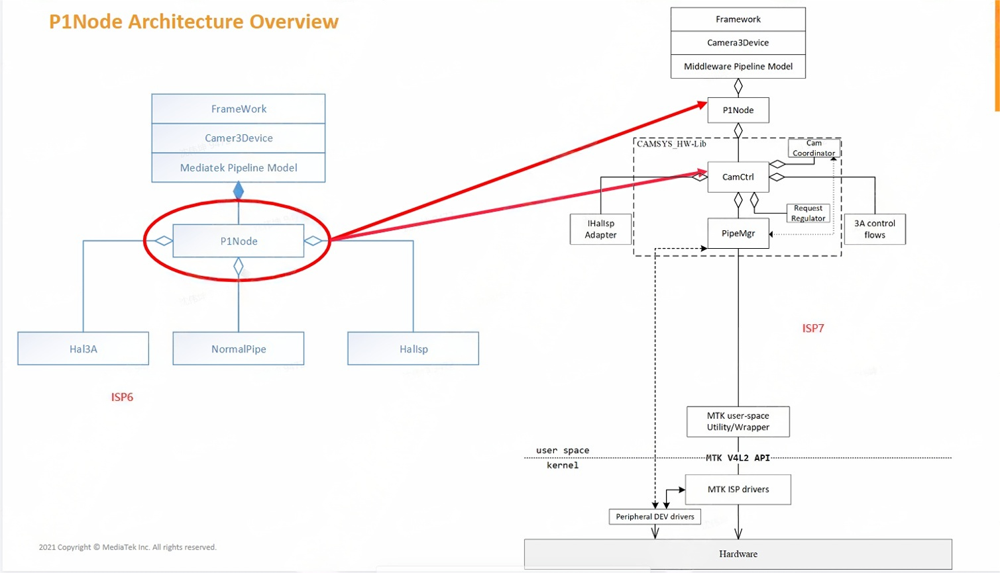
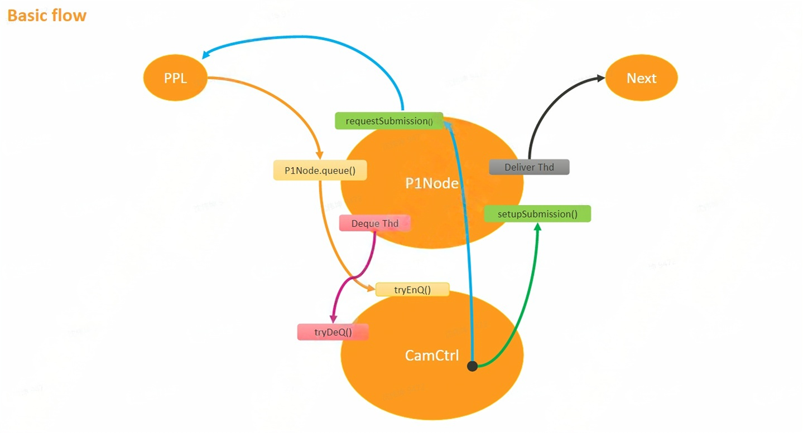
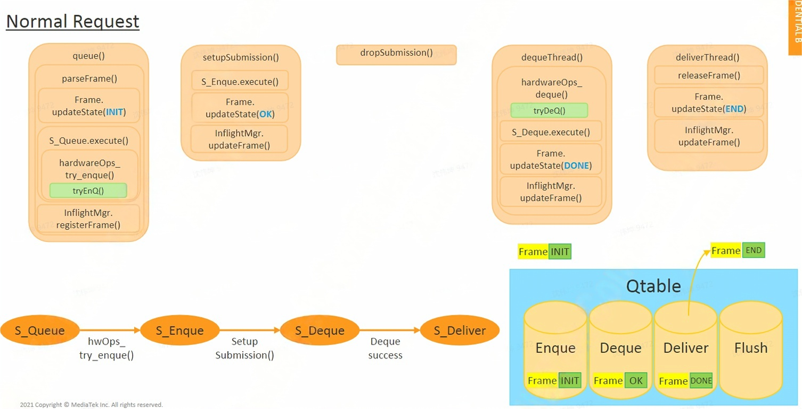
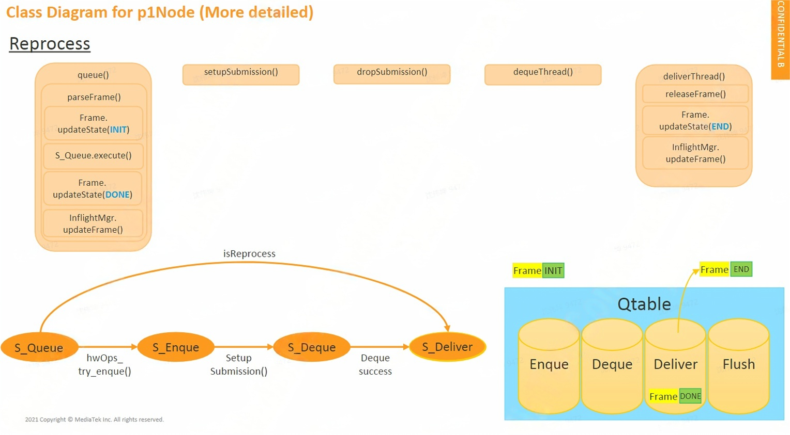
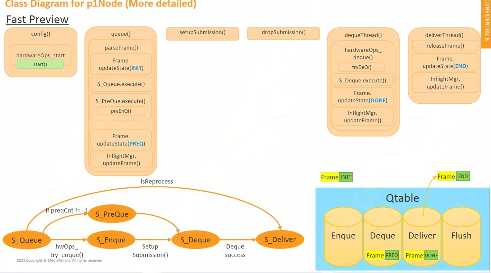
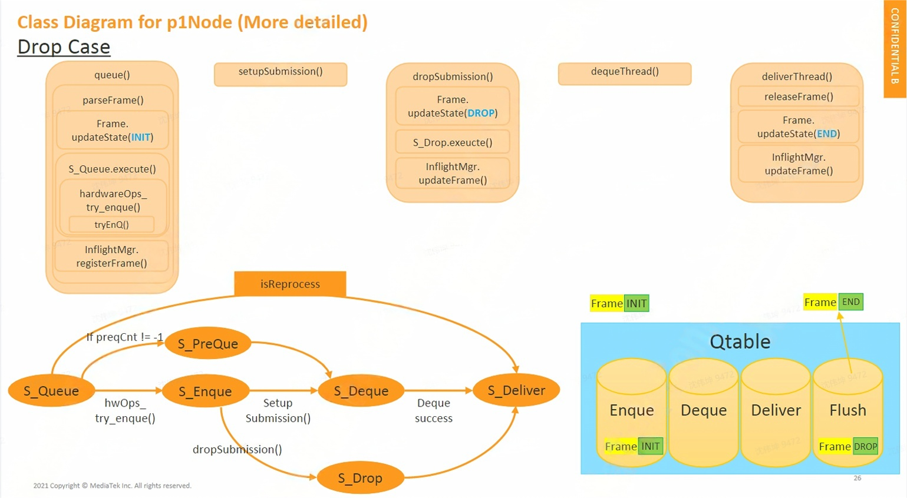

MTKcam-ISP7-P1 Node
P1Node Architecture Overview

如上图所示，在旧版的ISP6中，P1Node会直接与HAL3A，NormalPipe，HalIsp进行交互，但是在新的ISP7架构中，引入了CamCtrl作为协调者，统一协调Camsys Hw-Lib，P1Node与CAMCtrl进行交互。关于Camsys Hw-Lib的介绍可以看文档： ISP7-Camsys Hw-Lib
由此，P1 Node的工作变得更加清晰简单。
P1Node Basic Flow

如图是P1Node处理request的Basic Flow：
- 首先P1Node会先实作一些callback，可让CamCtrl回调，主要实作是requestsubmission和setupsubmission。CamCtrl 透过 requestSubmission 去通知 P1Node 送 request 下来,此时 P1Node 会通知 Pipeline 送 request 下来,之后 Pipeline 就会调用 P1Node 的 queue 丢 request 下来,接着P1Node 会 call 到 CamCtrl 的 tryEnQ 将 request 送下来。
- 接下来 CamCtrl 会调用 setupSubmission,主要是告之 P1Node 已经送了 request 下来,CamCtrl 这边也拿到了对应的设定,让 P1Node 将对应的 buffer 给 acquire 出来,并通知 P1Node 设定 buffer 的address 给 CamCtrl。
- P1Node 有一个 deque thread,这个 thread 会 call CamCtrl 的 tryDeQ,tryDeQ 是 blocking code,所以只有当真正 driver 那边有吐 data,CamCtrl 的 tryDeQ 才会放开,这个时候 P1Node 就可以拿到result 的数据。
- P1Node 还有一个 deliver thread,deliver thread 会透过 pipeline 的接口进行 dispatch。
Nornal Request：

上面是描述Normal Request的例子：
- 假设MW透过P1Node的queue接口送request下来，P1Node 会先执行 parseFrame 产生 S_Queue，在S_Queue 的时候主要是去 call CamCtrl 的 tryEnQ(图中 S_Queue 后面的 hwOps_try_enque()表达的是它会 call try enque,其他的状态后面表示被相应的事件来 trigger)。
- tryEnQ 主要是先告知 CamCtrl 有 request 进来,并将一些 setting 预先告知 CamCtrl。
- tryEnQ 之后 state machine 就会进入 S_Enque,并等待下一个 event trigger,这个 event 会是setupSubmission,setupSubmission 被 trigger 的时候 S_Enque 相关 function 会被执行,这个过程会跟MW 要 buffer,做完之后 state machine 就会停留在 S_Deque。
- S_Deque 状态会等 Deque thread trigger,当 deque thread 已经 deque 到东西,这个时候 S_Deque 的stage 就会做事情去产生 metadata,并切到下一个 state S_Deliver 等待被 trigger。
- 当Deliver thread 知道有可以 Deliver 的 frame 进入之后就会 call pipeline 的接口做 deliver。
Reprocess：

FastPreview(fast launch):

FastPreview的流程如上图(if preqCnt != -1)的流程，原本正常的流程request需要tryEnQ 并进入S_Enque状态，此时需要等待3A相关的计算。
为了加速启动，当((if preqCnt != -1)成立时，会调用preEnQ，进入S_PreQue状态，此时采用默认的3A计算结果（一般会是上一次退出相机时的3A计算结果）直接作用在driver，随后调用setupSubmission ，让 P1Node 将对应的 buffer 给 acquire 出来，并将buffer address给到Camctrl, 等待driver 吐帧。随后的流程和Normal Request一致。
Drop Case：
drop case应用在上层下发flush的场景，通过dropSubmission实现drop：
